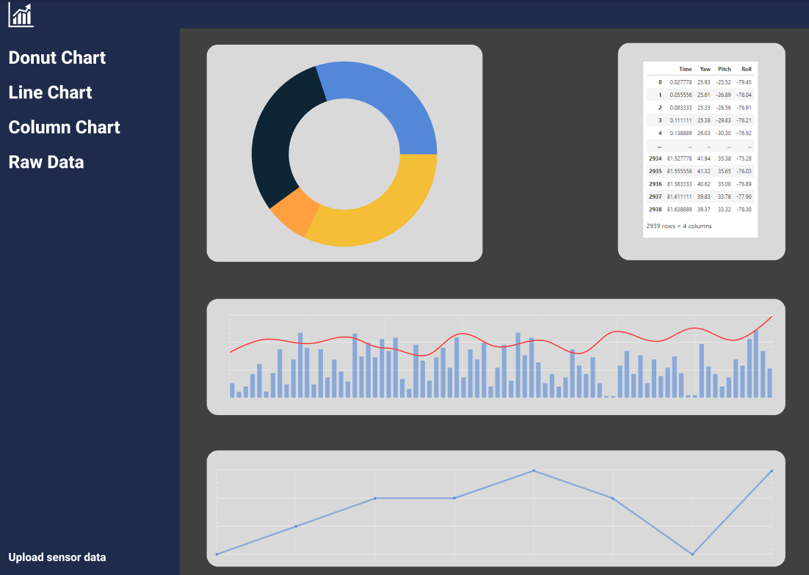
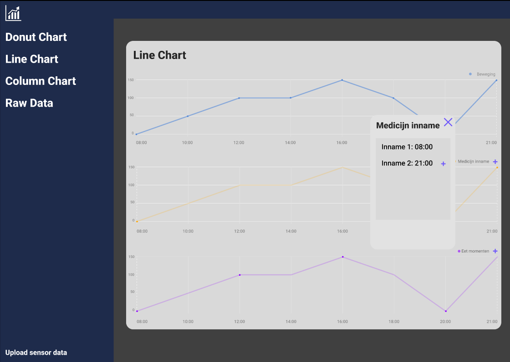
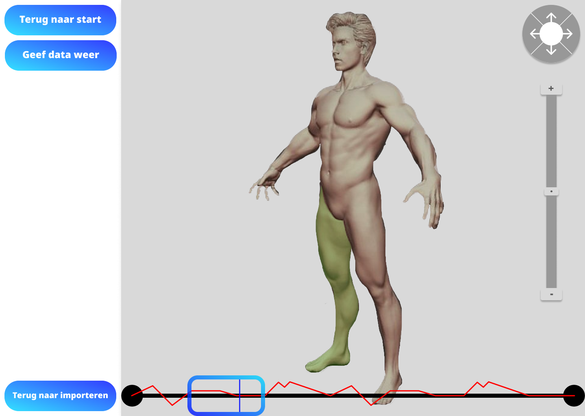
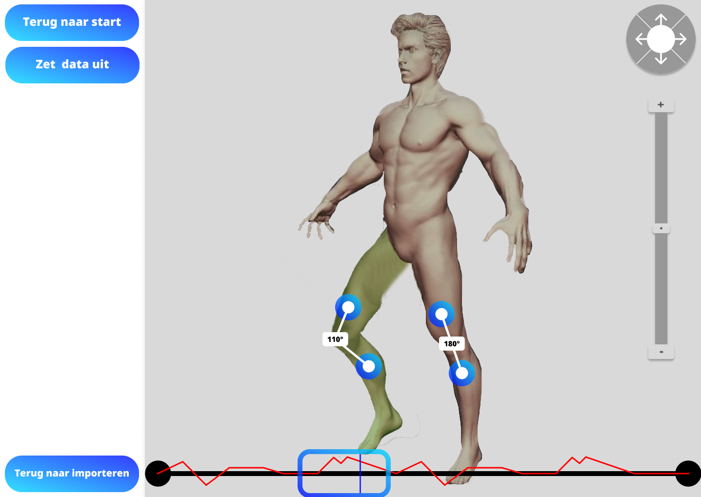
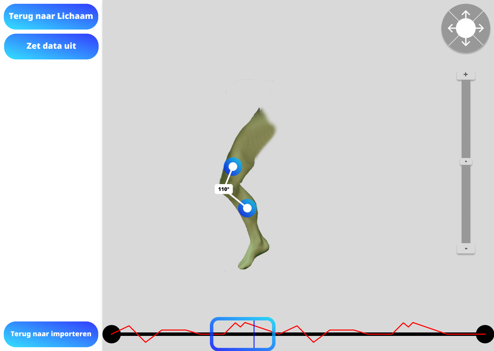
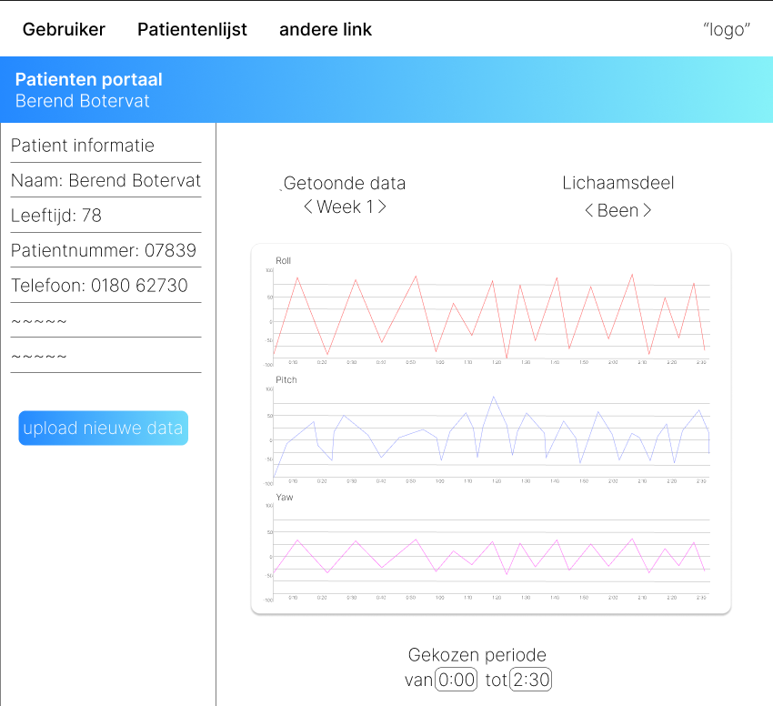

Wie zijn wij?
Medialab 1 team 1 bestaat uit 5 studenten die opleiding CMGT volgen
op de Hogeschool Rotterdam. De leden van ons team zijn Kevin, Sasha,
Pim, Wessel en Daan. Wij zijn gevraagd om data te visualiseren voor
diagnostiek gebruik door fysiologen.
Het idee achter dit project is dat hoe de diagnostiek gedaan wordt
met te weinig informatie is, omdat er niet genoeg tijd is voor
langdurige observatie.
Kennis Centrum Zorginnovatie
van de Hoge School rotterdam is hiervoor een sensor aan het
ontwerpen die de houding van mensen voor een langere periode kan
observeren. Het doel van ons Medialab team is duidelijk maken van de
data uit de sensoren.
Lokaal Dashboard



Dashboard met enkel de data van de huidige sensormetingen. Deze data visualiseren in grafieken, tabellen,
etc.
Dit kan de fysio helpen om sneller de benodigde data te verzamelen voor het uitvoeren van de
beweginsganalyse.
Door markers toe te voegen voor belangrijke momenten, zoals bijvoorbeeld medicijn inname of eetmomenten, en
de momenten te highlighten waar de meeste beweging wordt geconstateerd. Helpen we de fysio de meest
belangrijke momenten efficient terug te vinden.
◇
3D Model Loophoek
Interactief geanimeerd 3D model van een been/lichaam waarin de loophoek data duidelijk gevisualiseerd
word.
De loophoek word veranderd naar mate van de loophoek data van de sensor. De graden van de loophoek word ook
weergeven.
Dit helpt de Fysio door een zeer duidelijk beeld te krijgen van hoe de patient zijn loophoek eruit ziet/ hoe
hij loopt.
De sensor data kan geupload worden voor visualisatie, er kan verkleint en vergroot worden in de 3D animatie
ook kan deze bij gedraaid worden om vanaf meer kanten bekeken te worden. Ook zou er een timeline zijn waarin
verschillend momenten bekeken kunnen worden.



◇
Dashboard 2.0 (Dossier)
Een klanten dossier waarin de data van de sensoren wordt opgeslagen en een tijdlijn kan vormen voor de
patient. Hierin wordt week om week de data van de sensor opgeslagen zodat je deze kan vergelijken met vorige
weken zodat je kan zien of er verbetering in zit
